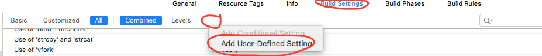
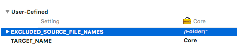

Наличие скриптов сборки в собранном пакете приложения
Критичность: ИНФО
Способ обнаружения: DAST, SENSITIVE INFO, FILES
Описание
В пакете приложения присутствуют файлы скриптов, которые используются в процессе сборки приложения. Наличие таких файлов может помочь злоумышленнику в определении особенностей процесса сборки, а также потенциально раскрыть информацию о внутренних репозиториях (если используются внутренние компоненты).
Рекомендации
Рекомендуется исключить из итоговой сборки файлы, которые не требуются для работы приложения и необходимы только во время сборки.
Если отсутствует файл пользовательских настроек для сборки, необходимо его создать.

Добавить ключ настройки EXCLUDED_SOURCE_FILE_NAMES, если он отсутствует.
Добавить значение настройки, какие файлы и папки необходимо исключить из конечной сборки приложения.

Search
From here you can search these documents. Enter your search terms below.